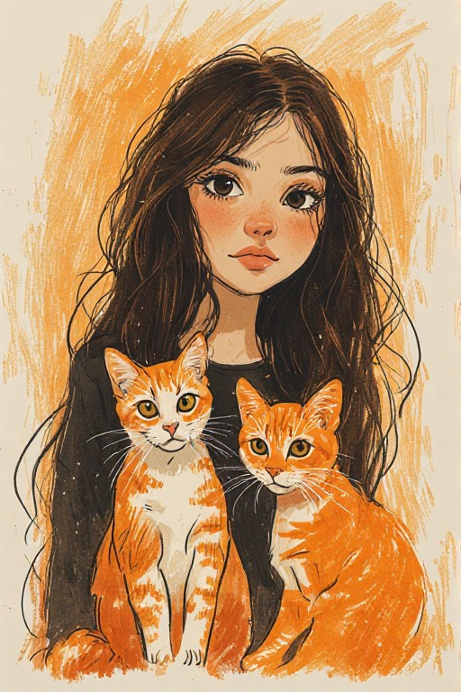
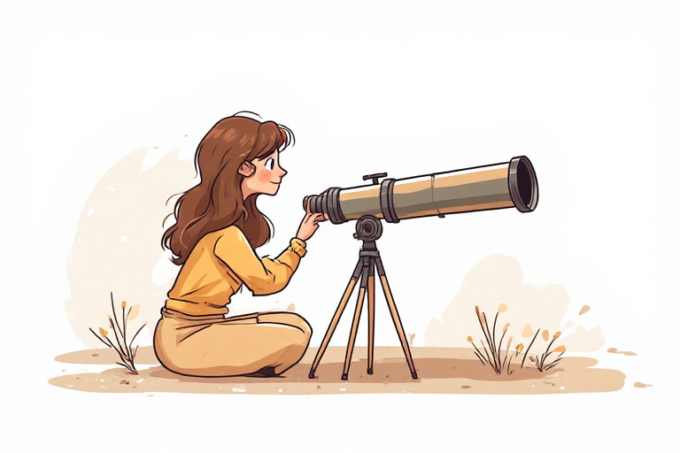
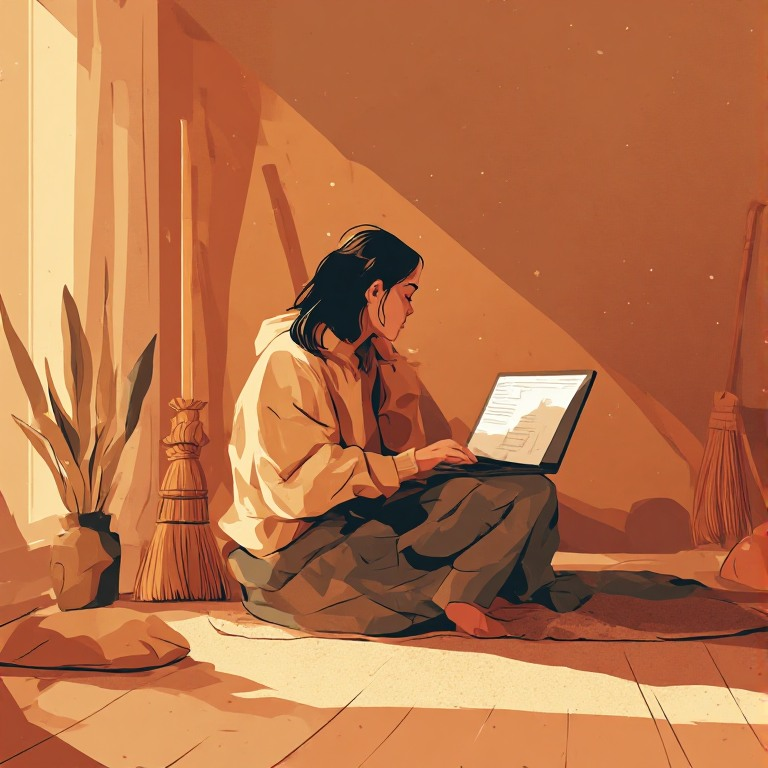

Cristina Rodríguez López

Soy española, nacida en Jaén capital.
Pasiones
Entre mis pasatiempos favoritos se encuentran ir a pasear con mi hijo, la astronomía, especialmente observar el cielo nocturno con el telescopio; los videojuegos, sobre todo de playstation, aunque juego más en PC por falta de tiempo; también me gusta el croché, hacer amigurumis sobre todo; la cocina, en especial la repostería, dibujar y las manualidades.

Educación
Tengo la ESO que me la saqué por libre de adulta, la Prueba de Acceso a Ciclos Formativos de Grado Superior que aprobé en un instituto de Sevilla, hice un primer año del Grado Superior de Educación Infantil en el Instituto Virgen de las Nieves de Granada y diversos cursos online, incluyendo un Curso de 210 horas de Analista de Sistemas de Información.
Mi historia
Nací en Jaén. De adolescente tuve que dejar los estudios para ponerme a trabajar en una empresa de limpieza. Con el tiempo me vine a Granada, abrí mi propio negocio y me convertí en madre. Luego vino la pandemia y tuve que cerrar mi negocio, pero en medio de todo seguí adelante: estudiando, formándome, sin parar. La informática siempre me había gustado, trastear con programas, con el ordenador... Cuando llegó Factoría F5, supe que era mi momento de intentar cambiar de vida.
